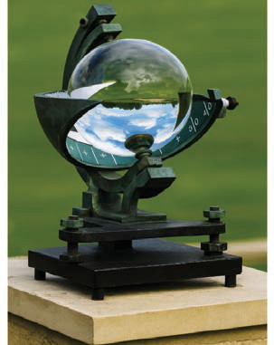

Mwanga wa Jua
Mwanga wa jua ni mwangaza na nishati ya asili inayotoka kwenye jua na kuufikia uso wa dunia bila kizuizi katika angahewa. Mwanga wa jua ni moja ya vipengele vya hali ya hewa ambavyo ni muhimu kwa maisha na ustawi wa viumbe hai. Miale ya jua ni chanzo cha joto, mwangaza na nishati ambavyo ni muhimu kwa maisha ya viumbe hai wote duniani. Vilevile, mwanga wa jua husaidia kukua kwa mimea kupitia usanisinuru na husaidia katika kukausha nafaka na nguo. Aidha, mwanga wa jua la asubuhi ni chanzo cha vitamini D, ambayo husaidia kuimarisha mifupa hasa kwa watoto.
Upimaji wa mwanga wa jua
Mwanga wa jua hupimwa kwa saa, wiki, mwezi, mwaka au wastani wa saa katika siku. Kifaa kinachotumika kupima mwanga wa jua kinaitwa kipimamwanga wa jua (sunshine recorder). Kifaa hiki kinapima muda ambao mwanga wa jua umeangaza kwenye uso wa dunia katika eneo husika. Kipimamwanga wa jua kipo katika muundo wa tufe la kioo ambalo limeshikiliwa na chuma. Pia, kina kadi yenye vipimo vya saa na dakika ambayo ina uwezo wa kuhisi mnururisho wa miale ya jua inayofika katika sehemu ya uso wa dunia kila siku. Miale ya jua huchoma kadi yenye vipimo na hii hutokea wakati wa jua linapowaka tu. Inapofika jioni, huchomolewa na kusomwa saa na dakika ambazo ndizo huwa kiwango cha mwanga wa jua kwa siku hiyo. Kielelezo namba 8 kinaonesha kipimamwanga wa jua.
